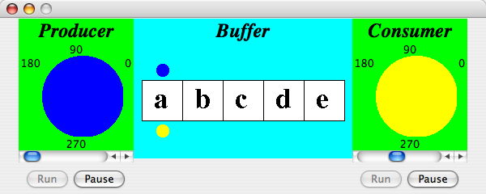
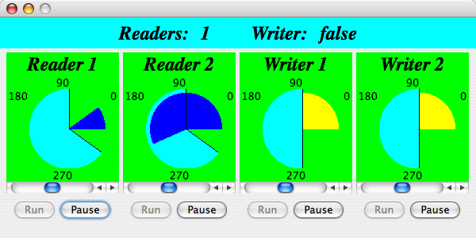
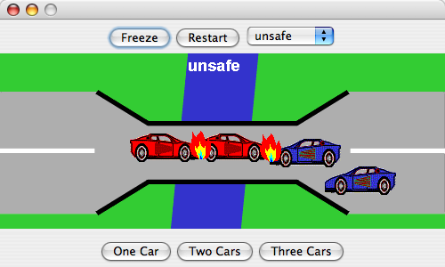
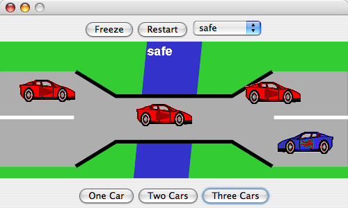
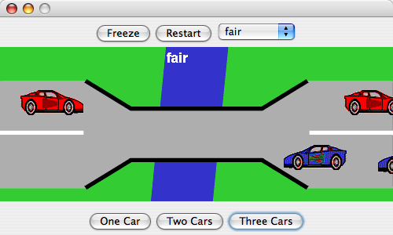
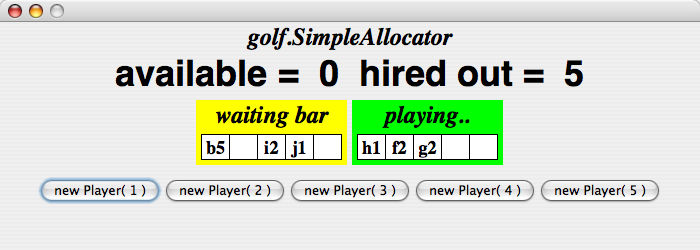

Lab 2: Liveness and Fairness (5 Bonus Points)
Instructions
Each exercise consists of a Java application that illustrates some concurrency problems. You must figure out what is "broken" and fix it.
You should work on the problems in teams of two. The source code can by loaded into Eclipse. There is an ant build file which you may use and adapt. Running ant will create and launch a single jar file consisting of a Launcher for the four exercises. Alternatively, you may use the built-in Java builder of Eclipse and run the exercises separately (each exercise has its own main method).
Most of the exercises additionally make use of the files in the directories
resources (containing sound clips and images) and
support (containing some reusable components).
You do not have to touch these files (except the Launcher), but you will need to include these files to
build a complete JAR file!
Exercise 5: Nested Monitor (1 Bonus Point)
The class buffer/NestedMonitor presents a view of a bounded
buffer connected to a producer and a consumer. It uses semaphores to protect
the shared resource. Unfortunately, if either the producer or the consumer gets
ahead of its partner, the whole buffer will deadlock. To see see this, start
them both (click on the two Run buttons) and then speed up one or the
other by moving the slider to the left. You will eventually see something like this:
|  |
Modify the application such in a way that the deadlock does not occur anymore.
Hint: (highlight the text in the box to make it visible)
Find and eliminate the nested monitor.
Check the classes |
Exercise 6: Readers and Writers (1 Bonus Point)
ReadersWriters allows Readers concurrent access to a resource while
restricting Writers to exclusive access. The critical section
is depicted by a light blue (cyan) arc segment.
In addition to running and pausing the Readers and Writers, and changing their
speed, you can change the size of their critical section by grabbing and
moving the start or end of the section:
It is possible by starting the Reader threads at different times to generate a scenario in which Writer threads are locked out. Try this, and see if you can reproduce the lockout.
|  |
Your job is to implement synchronization policies that are fair to Writers.
A policy is a class that implements the interface
ReadWritePolicy. The main class (SafeReadersWriters)
instantiates a SafeReadWritePolicy.
It uses a hook method SafeReadersWriters.makePolicy()
to instantiate the specific reader writer policy. You need to overwrite
this method in subclasses of SafeReadersWriters.
You should do the following:
- Define a policy
WritersPriorityPolicyas a subclass of the existing policy classSafeReadWritePolicy. This policy gives priority to writers by not allowing new readers to enter when a writer is waiting. - However the writer priority policy makes it possible for
readers to get starved out! Introduce a fair solution by subclassing your class
WritersPriorityPolicytoFairReadWritePolicy.
Hint:Consider introducing a flag that keeps track of whether Readers or Writers have priority.
NB: you can add two new buttons to the Launcher for starting the
application with different policies. (The code is already there, just uncomment it.)
Exercise 7: Single Lane Bridge (2 Bonus Points)
Cars are driving (very quickly) over a single-lane bridge. They cannot pass each other on the bridge. The buttons set the number of cars moving in each direction. The default is to have two red cars going east and two blue cars going west. As you see, the drivers are not as careful as they should be!
|  |
We want to offer three policies for accessing the bridge.
The default does not provide any safety for cars.
Modify the class skeletons SafeBridge
and FairBridge so that they provide respectively safe
and fair policies for crossing the bridge.
The safe policy should ensure that there are never two cars going towards each other on the bridge. This solution, however, may freeze out oncoming traffic. If there are many red cars (set the number of cars to three), then the safe solution might prevent blue cars from getting on the bridge.
|  |
Hint for safety:
Keep track of the numbers of red and blue cars on the bridge. |
The fair solution should guarantee that every waiting car eventually gets to cross the bridge.
|  |
Hint for fairness:
Keep track of numbers of waiting cars and whose turn it is. |
Warning: due to much repainting of the scenery, the buttons may not react very quickly.
Exercise 8: Golf Ball Allocation Monitor (1 Bonus Point)
At a golf club, players can hire golf balls for their game from the club and return them to the club after use. The better players, who tend not to lose any balls, only hire one or two. The less experienced players hire more balls, so that they will have spares during the game in case of loss. They are, however, required to buy replacements for the lost balls so that they return the same number that they originally hired. The golf balls are kept by the club groundsman, who turns out to be a techie. He decides to treat the players as Java threads and to write a monitor to allocate golfballs to players, if available, or to delay the players if insufficient are available.
However, with our simple allocation policy, it is possible that a player with many balls may starve. Try two players with 4 and 5 balls, then make many players with one and two balls. As you see, the (later) players with few balls get served, whereas the (early) players that need many balls are not served.
|  |
You should subclass the GolfClub class and overwrite
the template method buildAllocator so that the club uses different
allocation policies. Implement a fair policy (e.g. FairAllocator) that
does not allow players to starve. Allocators must implement the interface IAllocator.
Hint:
A simple fair solution would be: 'first come, first served'. |